Enrijecido pela febre não desanimava, sempre
olhava para ver se o chinês vinha. 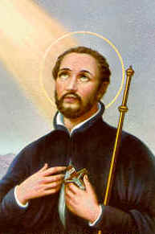
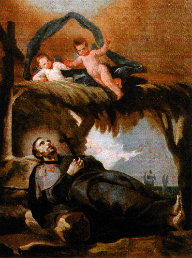
Os portugueses do barco Santa Cruz vieram
prestar-lhe uma homenagem de despedida. Antônio, ajudado por dois mulatos colocou
o corpo do Santo num rústico caixão de madeira e levou-o num barco, para o outro lado
do porto. Colocaram bastante cal no ataúde para apodrecer rapidamente o corpo e o
enterraram. Eles queriam apodrecer o corpo porque seria mais fácil levar somente os ossos,
quando fossem transporta-lo de volta. Passaram-se três meses. O navio Santa Cruz
iniciou os preparativos para retornar a Málaca. Antônio conversou com o capitão da
embarcação e foram desenterrar o corpo de Xavier para leva-lo. Quando desenterraram
e abriram o caixão, ficaram surpresos e admirados, não tinha cheiro algum e o corpo
estava perfeito, como se 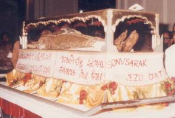
Em Málaca o povo recebeu o corpo do Santo com grande fervor e entusiasmo. E ele agradeceu aquelas homenagens intercedendo em favor daquela gente. Existia na cidade uma grande mortalidade causada por uma febre maligna. Com a chegada do corpo do Santo, o “andaço” da febre desapareceu e a mortalidade cessou imediatamente. Um enfermo beijou a mão do Santo e ficou instantaneamente curado. O SENHOR realizou muitos milagres, atendendo as suplicas do povo que rezava diante do corpo de Xavier, pedindo a sua eficaz intercessão junto a DEUS.
Depois o levaram para Goa. Lá também sua chegada foi comemorada com muitas honrarias e festividades. Até hoje o corpo de São Francisco Xavier é conservado incorrupto na Igreja do Bom Jesus, onde recebe diariamente a devoção dos fieis.
Xavier foi canonizado no dia 12 de Março de
1622. O Papa Benedito XIV em 1748 outorgou-lhe o título de Patrono do Oriente. Em
1904, o Papa Pio X deu-lhe o título de Patrono da Propagação da Fé e Patrono Universal
das Missões. O 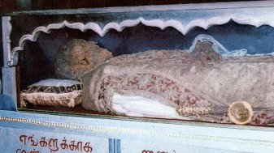
Mesmo depois do falecimento de Xavier, os Jesuítas durante dois séculos continuaram partindo de Goa para evangelizar o Oriente.
Ele foi o grande Apóstolo dos tempos modernos,
como São Paulo foi o notável Apóstolo nos tempos antigos. Missionário de valor especial,
hoje nos deixa admirados com suas obras portentosas. Foi o grande conquistador do Oriente
que abriu caminho para um exército de missionários, porque verdadeiramente ele despertou
o espírito missionário na cristandade. Dizia o Jesuíta Araoz, “Xavier 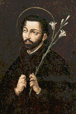
Afirmam os hagiógrafos de Francisco Xavier, que em todas as sextas-feiras de Janeiro a Dezembro de 1552, o seu último ano de vida, aquele Crucifixo do Castelo de Xavier em Navarra, na Espanha, derramou sangue das preciosas chagas de JESUS. Subitamente parou de derramar sangue após o dia 3 de Dezembro de 1552, quando ele morreu. Aquele sangue sagrado do SENHOR, coagulado nas suas Chagas no Crucifixo, é admirado e venerado por uma avalanche de peregrinos de todas as partes do mundo, que visitam o Santuário.
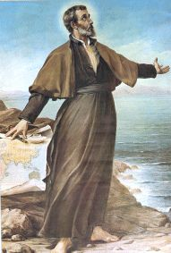
(PAI NOSSO + AVE MARIA + GLORIA)
ORAÇÃO FEITA POR ELE
DEUS ETERNO, CRIADOR de todas as coisas, eu VOS suplico: desperte as almas dos infieis fazendo com que sejam a Sua Imagem e Semelhança; desperte-os PAI CELESTIAL do torpor da indiferença em que vivem, lembrando que JESUS CRISTO VOSSO FILHO Unigênito, derramou o seu precioso sangue e padeceu na Cruz também por todos eles; não permita que o VOSSO FILHO continue a ser desprezado por eles; ao contrário, que ELE seja amado e louvado com preces e orações dos Santos da Igreja e daqueles que O amam verdadeiramente; despertai os infieis por vossa imensa misericórdia e se esqueça de suas idolatrias e infidelidades, fazendo que eles conheçam o SENHOR JESUS, que é vida, nosso caminho, saúde e ressurreição, que nos redimiu e salvou e a quem devemos agradecer e glorificar pelos séculos infinitos. Amém.
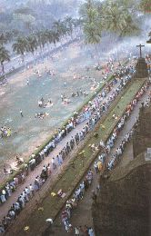
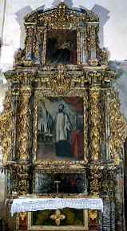
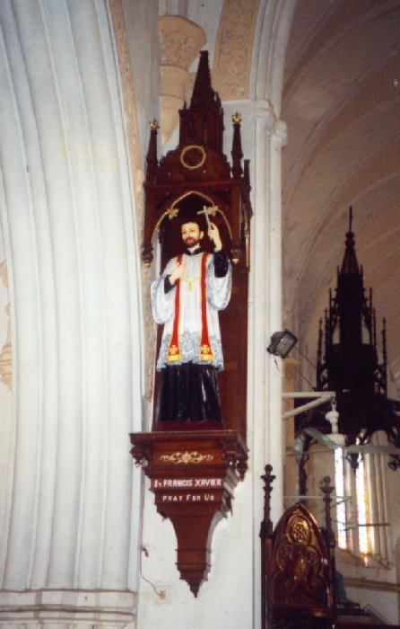
1 - Romaria em Goa para pedir graças ao SENHOR pela intercessão do Santo; 2 - Altar na Igreja de Bom Jesus em Goa; 3 - Imagem do Santo na parede da Igreja de São Pedro em Málaca.
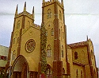
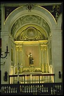
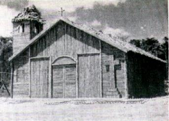
4 - Igreja de São Francisco Xavier em Goa, na Índia; 5 - Altar do Santo em Goa; 6 - Capela de madeira como ele construía em todas as aldeias.